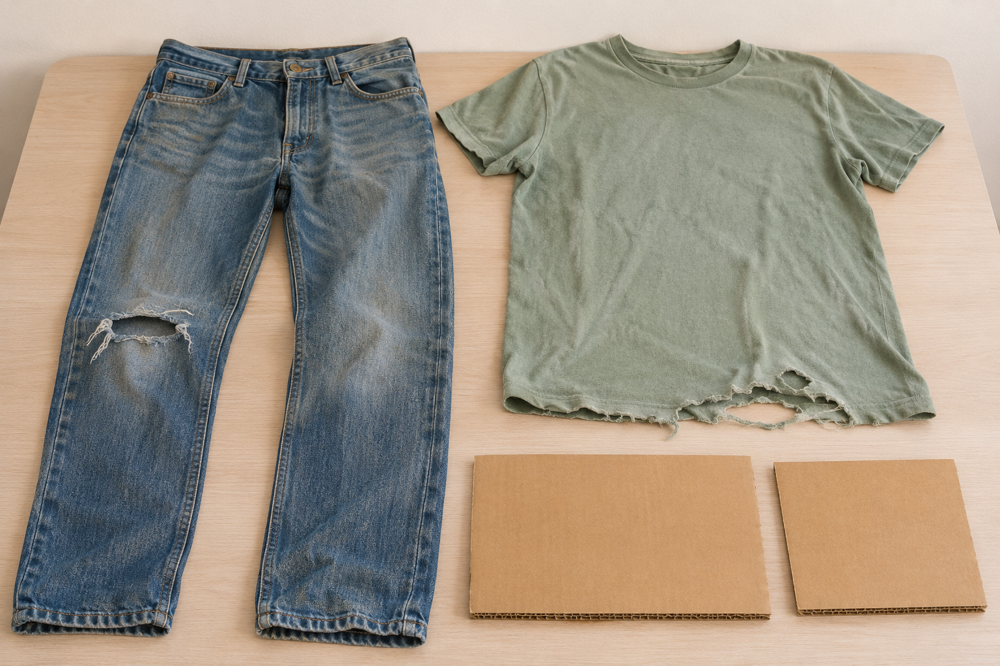
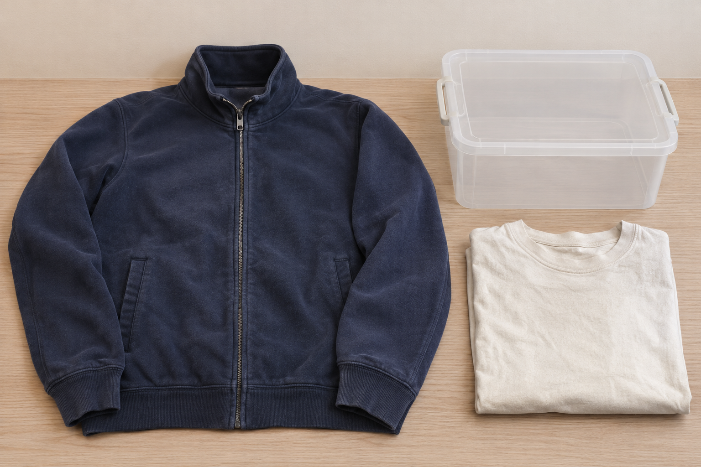
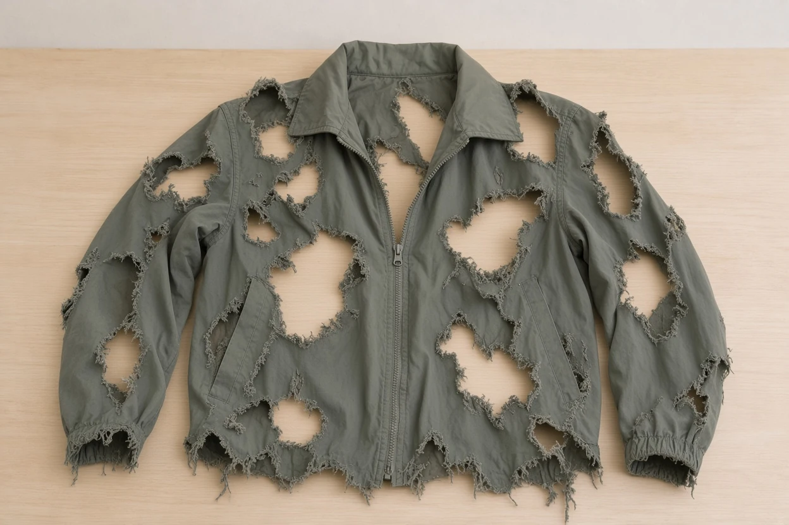

A｜候选二创材料 · AI原物示意A · 二创材料
原样不好用，还有可用部分。
例如破膝但有大块好布面的旧裤子、下摆破损的旧T恤，以及尺寸合适的干净纸板。
- 判断条件
- 清洁、强度与可用尺寸合格；匹配已启用制作模板。
- 实际安排
- 创客检查实物，配齐材料包，再排制作。
图中是候选材料示例。目前模板未启用，须先打样与复做；不能凭照片直接批准生产。
把闲置，接到下一种用途
顺路交出闲置，让合适的材料成为实用小物。
先看用途、设计和材料的变化，再决定值不值得带走。
成品、候选设计与流程演示；暂无现货，不接订单或付款。
先看收到的原物
类别按状态、可用用途和真实去向判断。同一种东西，可以分到不同类别；A／B／C不是成色高低的排名。

A｜候选二创材料 · AI原物示意A · 二创材料
例如破膝但有大块好布面的旧裤子、下摆破损的旧T恤，以及尺寸合适的干净纸板。
图中是候选材料示例。目前模板未启用，须先打样与复做；不能凭照片直接批准生产。

B｜可直接重用 · AI原物示意B · 可直接重用
例如拉链完好的旧外套、清洁完整的旧衣，以及盖子、箱体完好的宿舍收纳盒。
不是所有旧东西都要加工。图示条件为情景说明，真实清洁与功能须现场检查。普通旧衣继续走原回收渠道。
查看校園閒置領取演示
C｜材料回收示例 · 条件见下C · 材料回收
例如多處大面積撕裂的舊外套，已無法再穿，也沒有符合目前二創模板的完整布面。實際交收前須核對物料和接收渠道。
这是条件示例，不是已获接收承诺。不能因破旧就放进普通旧衣箱；其他二创可能性与具体回收条件须核实。
完整可用的收纳盒先归B；破损且没有适用二创模板的塑料盒，要先核材质、锐边及接收方条件。去向不明先待核，不直接塞进公共回收箱。霉变、油污或危险物须隔离／拒收，不能因“不能二创”就都归C。
旧裤子：完好可穿 → B；不宜穿但布面合格且匹配模板 → A；无可用布面、又无已确认去向 → 待核，不能自动归C。
纸板：完整可继续做包装 → B；尺寸与强度符合启用模板 → A；不匹配模板但渠道确认接收 → C。
AI辅助检查与创客模板
先按狀態判斷去向，再用下面的案例試一次。
優先直接重用，符合接收範圍的可走校園閒置領取。
看領取示例核對材質、可用尺寸和強度，再由創客確認是否適合二創。
看作品與製作模板例如大面積撕裂的外套。核對物料與接收條件後，安排原料回收。
看收件判斷处理建议 · 预置流程演示
没有实时AI识别、图片上传或真实生产审批。实际清洁、强度和尺寸仍需实物核验。
条件通过的候选还要由创客看实物。此處以日常系列 T02 演示尺寸匹配。實際製作前須完成相應模板的打樣與測試。
人工确认
下面是角色与责任的演示，不表示已有创客检查过这件衣服，不会批准真实生产。实际清洁、强度和尺寸仍需实物核验。
點選作品可查看用途、參考尺寸、物料變身和製作模板。
4 款日常收納構想。雙格收納盒用作製作工序示例。
8 款以校園風景與地標為靈感的二創成品展示。
材料变身
前后对比用于说明创意。正式商品页将改用本批真实原料、实物照片和质量记录。
研究启发：真实的材料来源与变化过程，可能增强商品故事。不是编造某件旧衣的经历，也不表示展示照片便一定带来购买。
模板匹配演示
AI可协助整理信息；模板是否能用，仍由创客检查实物。
牛仔布可能对应多个候选，但目前没有已启用模板。信息匹配不会直接批准收料或制作。
一条完整的循环链
一个获准点，开放时间内自助投递；公布清单、满箱及停收情况。
完好先直接重用；符合启用模板的材料配包；回收料只交已确认渠道。
校内兼职创客按验证工序制作，核材料、工时、质量与接单容量。
看实物、总价和交付安排；条件齐全才接小批订单，质检后交付。
A类1箱、B类2箱、C类2箱、待核1箱，用于分类暂存；前端是一个待检投递箱。不是六个投递点。
从兴趣，走到真实购买
展示四款，记录选择和不选原因。点击、收藏、登记都只算兴趣，不能当收入。
各款完成相應模板打樣及測試後，再展示實拍與交付條件。价格须核实际人工、辅料和售后成本。
記錄真實付款、交付、退款及實際成本，作為調整與續期依據。
用途图 + 真实材料变身 + 可选设计 + 可核对质量与总价。可在同价、同产品条件下轮换展示侧重点，观察访问、购买与退款；小样本只作方向判断。
支持动机的真实依据
这些资料支持探索与设计方法，不代替科大学生对本商品、本价格的真实购买。
科大官方2024年报道：项目在校内转售超过100件二手衣物。说明校园循环交易曾实际发生，品类是二手衣物。
阅读科大原文Brown官方报道：学生将过剩服装改造为二创系列，首个RISD系列售罄。没有公开件数、利润或学生买家占比。
阅读大学原文2019年《Journal of Marketing》研究包括大学场地销售实验：强调来源的一组有更多购买记录。转化率差异未达5%显著水平，不套用销量倍数。
阅读研究原文AI生成产品概念图与Codex网页原型。四款均未打样，无库存、销量、付款、学校合作或安全认证声明。访问外部资料需联网；本展示不向外部发送选择记录。